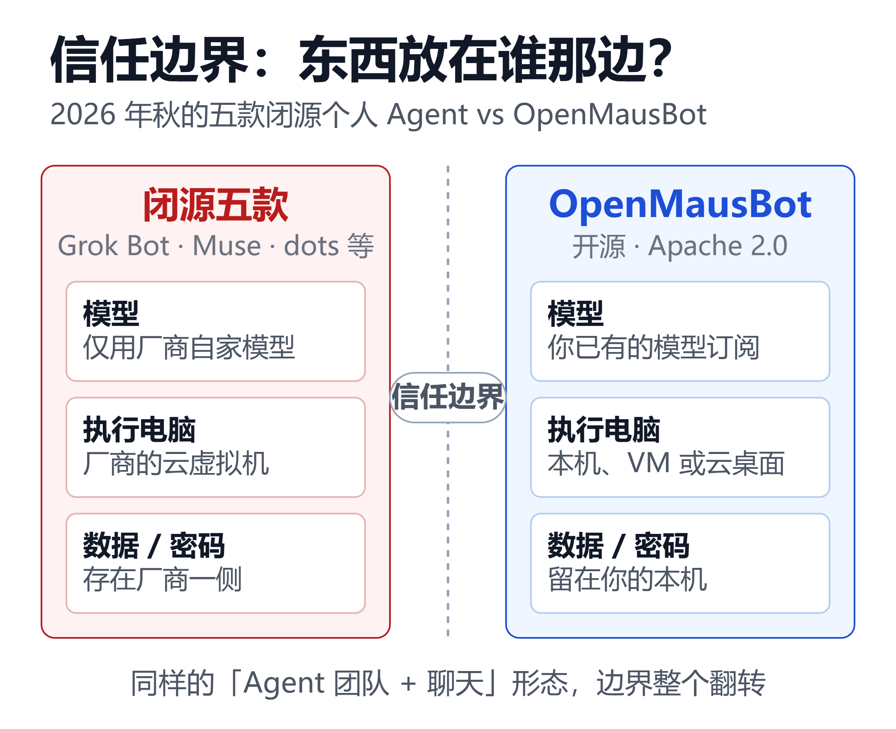
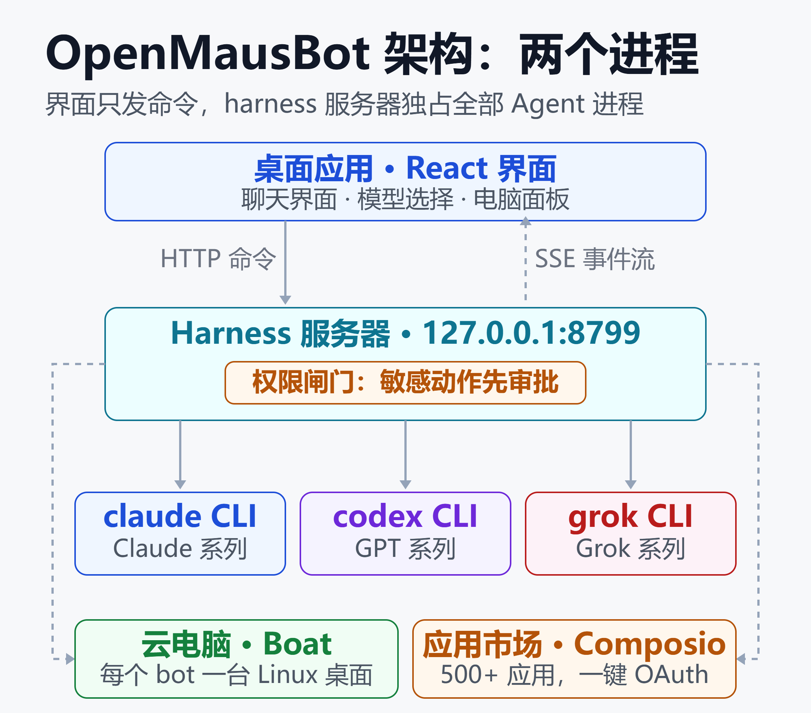

3个月2.7万星：OpenMausBot把一队AI Agent装进聊天App，开源版Grok Bot来了
先看数据：三个多月，27350 颗星
GitHub 上一个 2026 年 8 月 11 日才创建的仓库，到 11 月下旬已经攒下约 27350 Star、3900 Fork——平均每天 137 颗星。它叫 OpenMausBot，定位一句话就能说清：开源版 Grok Bot。
它长得很像 Telegram：一个联系人列表，每个联系人都有头像、人设和独立聊天记录。区别在于，列表里坐着的不是人，而是一队 AI Agent——每个 bot 可以用不同的模型、连不同的应用、操作自己的电脑，你像发消息一样给它们派活，像看直播一样看它们干活。
作者是旧金山湾区的独立开发者 Milind Soni，项目以 Apache 2.0 协议开源，技术栈是 TypeScript + Electron + React。一个人、三个半月、两万多颗星，这个速度本身就是一个信号。
它是什么：一支装进聊天软件的 Agent 团队
OpenMausBot 的核心形态是「AI 即通讯录」。每个 bot 拥有四样自己的东西：人设、模型、电脑、已连接应用。
- 人设：名字、头像、性格、系统提示词，右键就能复制、编辑、置顶
- 模型：bot 可以分别跑 Claude、Codex、Grok，聊天中途还能换脑
- 电脑：云 Linux 桌面、隔离虚拟机，或在安全认证通过后直接用你的本机
- 应用：通过 Composio 一键连接 Gmail、Slack、GitHub、Notion 等 500 多个应用
最关键的设计是「自带 Agent」（bring your own agents）：bot 底层跑的是你机器上已经装好的 claude、codex、grok 命令行工具，用你已有的登录和订阅，不需要注册新账号，也没有中间商代理。
再往上一层是频道（channels）。工作、生活、每个项目各开一个频道，每个频道有自己的聊天记录、共享指令、工作目录和成员名单——同一批 bot 可以按不同组合出现在不同频道里，不必反复克隆配置。
群聊场景下还有个讨巧的设计：房间设为「Auto」时，一个轻量决策模型会在几百毫秒内判断没人 @ 的消息该交给哪个 bot 处理，拿不准就回落给房间的主答 bot。路由能力用 Cloudflare Workers AI 或 OpenRouter 的 key 就能开启。
这个思路与行业里「一个订阅一个孤岛」的做法正好相反，和《从LLM到Agent的范式跃迁2026：OpenAI「去聊天化」背后，整个行业在押注什么》里讨论的趋势同源：AI 的入口正在从「对话框」变成「会干活的联系人」。
背景：七周五款闭源产品，然后有了开源回应
要看懂这个项目为什么爆红，得先看它出生的时间点。2026 年 8 月到 9 月的七周里，五款闭源「个人 Agent」密集发布：
| 闭源产品 | 关键限制 | OpenMausBot 对应做法 |
|---|---|---|
| Grok Bot（xAI） | 仅Grok模型 | 每个bot任意模型 |
| Meta Muse | 仅美加地区 | 装哪跑哪 |
| OpenAI dots | 需特定订阅 | 复用现有CLI登录 |
| Cue by Manus | 邀请制 | 无门槛直接装 |
| Instinct | 云端持有密码 | 本机执行+审批 |
这五款产品形态各异，但有一个共同点：模型、执行电脑和你的数据，都留在厂商那一侧。Grok Bot 的机器人跑在 xAI 的共享云电脑上；Muse 装在 Meta 的云虚拟机里；Instinct 甚至把你的密码放在云端电脑上保管。
OpenMausBot 保留了这个产品形态里最有价值的部分——「一队机器人 + 聊天式交互」，然后把边界整个翻了过来：进程跑在你本机，密钥和聊天记录存在 ~/.openmausbot 目录，Agent 用你自己的订阅。仓库里那句自我介绍很直白：如果你在找「开源的 Muse、开源的 dots、开源的 Grok Bot」，就是这里。

上图的核心差别一句话就能说完：闭源五款把模型、电脑、数据都放在厂商侧，OpenMausBot 把这三样全部挪回你的机器——这也是它全部设计决策的出发点。
架构拆解：两个进程、一套权限闸门
OpenMausBot 的工程结构意外地克制，只有两个进程。
一个是桌面应用（Electron 壳 + React 界面），自身不持有任何 Agent 进程，只通过 HTTP 发送命令、通过一条 SSE 事件流接收状态。另一个是 harness 服务器，绑定在 127.0.0.1:8799，拥有全部 Agent 进程，负责把 Claude、Codex、Grok 各家 CLI 的原生协议归一化成统一的事件流，按线程落成 NDJSON 日志。

如上图所示：界面层只跟 harness 说话；harness 通过驱动层拉起本机的三个 CLI；所有敏感动作都必须先过权限闸门。每接入一个新厂商，只需要在 server/drivers/ 下加一个文件再注册一行；识别不了的引擎会降级显示为「不可用」，不会拖垮整个机队。
架构里最有含金量的是权限代理（permission broker）。bot 要执行 shell 命令、改文件、或者遇到拿不准的问题时，动作会被拦下来，以行内卡片的形式出现在聊天流里——允许 / 拒绝 / 直接回答，云端电脑和本机控制一视同仁。这相当于给「Agent 自主干话」这道行业难题加了一个最小可行的答案，相关的治理视角可以延伸阅读《AI Agent治理与可观测性：企业落地的隐藏成本》。
几个工程细节能看出这个项目的克制程度：每接入一个新厂商，只需在驱动目录加一个文件再注册一行；识别不了的引擎降级显示为「不可用」，不会拖垮整个机队；所有事件按线程落成 NDJSON 日志，排查问题有据可查。界面层没有任何自有传输协议，全靠 HTTP 命令加一条 SSE 流，这也是它能同时支撑桌面端、浏览器端和手机端的原因。
能干什么：从审批卡片到定时例程
除了基本对话，几个有代表性的能力值得单独说。
定时与触发。可以直接对 bot 说「每个工作日早上 9 点给我整理收件箱摘要」，它当轮就能建好触发器，聊天里出现可暂停、可撤销的实时卡片。触发器支持单次、按星期、5 到 1440 分钟间隔三种节奏，还支持 webhook 和应用事件——比如「收到某客户邮件就起草回复」。
一个 Markdown 文件装一支团队。社区仓库 openmausbot-teams 里有人把整套「部门」——多个 bot、参谋长、频道、例程、连接清单——打包成一个带 YAML 元数据的 Markdown 文件，应用内一键审阅安装。格式刻意保持可移植：OpenMausBot 读结构化字段，人类和其他 AI 读正文。连接默认关闭、例程默认暂停、永远不带密钥，这个默认值设计得相当克制。
部门还能整体导出分享：右键一个部门，连 bot 的人设、头像、技能、群聊和参谋长一起存成一个文件；聊天历史、密钥、模型选择永远不进包，疑似密钥的文本会被自动抹掉。导入方拿到的是全新的 bot，技能默认关闭、例程默认暂停。
语音与来电。bot 可以把回复朗读出来，也能进入「打电话」模式：它一边干活一边口头汇报，遇到要审批的事开口问你。语音后端可选 ElevenLabs、Fish Audio、Grok，或本地部署的 Chatterbox，听夜间跑完的工作汇报适合在早餐厅使用。
给程序员的接口。内置 stdio 协议的 MCP 服务器，Claude Desktop、Cursor 可以直接编排这支 bot 团队（刻意只暴露有界的控制面，不给删除和授权权限）；命令行 openmausbot run 支持把任务丢给整个房间、等待所有相关 bot 完成、以 JSON 导出产物，可接进 CI。
手机与远程。桌面版可以经 Tailscale 配对成另一台电脑的客户端；服务器模式会生成一个配对链接，手机浏览器或原生应用扫码接入。躺在沙发上查看 bot 昨夜干了什么，这个场景是真实可用的。
热度从哪来：一次精准的卡位
两万多颗星不是凭空来的。TrendShift 趋势榜上有它的位置，GitHub Daily 播客专门做了一期节目；外网的需求侧情绪也很明确——Reddit 的 Grok Bot 社区里有付费用户抱怨用量配额烧得太快、在找替代品，Cursor 论坛的对比帖里，它是少数被认可的真自托管选项。
中文圈的跟进速度也很快：INSIDE、CSDN 相继做了介绍和解析，Threads 上有用户晒实测，台湾的 Facebook AI 社团里它被列进「三大免费/开源 Grok Bot 平替」的讨论清单。
拆开看，这次走红是三股力的叠加：闭源五款产品刚刚完成市场教育，用户已经理解「一队 Agent + 聊天」是什么；订阅价格与配额焦虑同步升温；而数据归属的疑虑一直没人回应。OpenMausBot 恰好同时踩中三点，还赶上个人 Agent 话题的搜索高峰期。
冷静看：四个必须知道的边界
热度归热度，这个项目自称「早期但真实」（early but real），有几个边界需要摆在桌面上。
其一，凭证与权限面。 终端模式下 API key 以明文存在 config.json（Unix 下权限 0600）；桌面版走操作系统加密，但部分引擎 key 和 MCP 头部仍是明文。给 bot 连接邮箱、代码仓库本身就是高敏感操作。
审批卡片降低了风险，但没有消除——Agent 权限治理的通用问题在这里同样成立，《Vibe Coding的隐藏代价：2000个裸奔应用、630万丢失订单、和322%的权限漏洞》里的教训值得先读一遍。
其二，第三方付费依赖。 云电脑由赞助商 Boat 提供，试用期后收费；应用连接依赖 Composio，桌面版每天最多处理 500 个应用事件，付费云版 2000 个。云电脑和本地虚拟机之外，「控制你的本机」目前仅 macOS 和 Ubuntu Xorg 在显式开关后可用，Ubuntu Wayland 因安全问题暂时禁用。
其三，成熟度不均。 平台支持分三档：macOS 最完整，安装包已签名公证；Windows 功能可用，但安装包尚未代码签名，首次运行要过一道 SmartScreen；Ubuntu 24.04 还是 beta，仅 GNOME 桌面受支持。托管版和手机端连接仍在建设中，开源不等于稳定，拿生产数据喂它之前先掂量。
其四，隐私与遥测。 用量分析是可选且匿名的，只统计事件类型和每日一次的配置计数，不含密钥、姓名和对话内容，设置里可以一键关闭。这个态度在同体量的开源项目里算坦诚，但「给了 bot 多少权限」最终仍取决于使用者自己的审批习惯。
其五，许可证细节与蹭名乱象。 主体 Apache 2.0，但 enterprise/ 目录是「源码可得」而非开源，删掉该目录才是纯开源版。另外作者公开声明项目没有任何加密货币——市面上蹭 Maus、SupaMaus 名字发币的都与项目无关，这个声明本身说明蹭名行为已经多到需要置顶。
谁适合上手，怎么开始
适合的人：手里已有 Claude、Codex 或 Grok 的订阅或 API key，想低成本试「个人 Agent 团队」这套形态；在意数据位置，不想把邮箱授权交给云端产品；有一定动手能力，能接受早期软件的毛边。
不太适合的人：想要开箱即用、全平台稳定托管服务的用户，现阶段闭源商业产品仍然更省心；完全不打算在本地装任何 CLI 的用户。
依赖清单很短：Node 24 以上、包管理器 pnpm，以及至少一个登录过的 claude、codex 或 grok 命令行——装齐之后它们会自动出现在模型选择器里，同一个 bot 可以随时在三者之间换脑。Composio、Boat、语音这些凭据全部可选，不填也能跑纯本地聊天。
上手路径很短。有 Node 24 环境的话，两条命令就能跑：
npm install -g openmausbot
openmausbot
首次启动是箭头键向导：选 AI 接入方式、登录或贴 key、选模型，可选连接手机。也可以直接从官网下载 macOS、Windows、Ubuntu 安装包，桌面版内置 harness 服务器，无需单独部署。想跑在 VPS 上常驻，用 npx openmausbot serve，支持 Tailscale、反向代理等多种暴露方式。
源码运行则三步：pnpm install、pnpm dev:server、pnpm dev，浏览器打开 5199 端口即可。
小结
OpenMausBot 的走红不只是一个独立开发者的胜利。它踩在两个趋势的交点上：个人 Agent 形态被五款闭源产品验证成立，而「数据回家」的诉求又在同步升温。它用最朴素的答案回应了这个矛盾——形态照抄，边界翻转，进程、密钥、订阅全部留在用户手里。
27350 颗星说明市场在奖励这种朴素。当然，它还年轻：安全边界仍在打磨，托管能力还没建成，商业生态（云电脑、企业版）与开源社区的关系也有待观察。但作为一个「开源如何回应闭源 Agent 潮」的样本，OpenMausBot 值得放进观察清单——个人 Agent 这场仗，才刚打过第一回合。
免责声明
本文基于公开资料（项目 README、GitHub 数据、社区讨论）整理，数据截至 2026 年 11 月 24 日，Star 数等指标实时变化。项目处于快速迭代期，功能与平台支持以官方文档为准。本文不构成任何投资建议，亦与任何加密货币无关。
参考来源
- GitHub —— milind-soni/OpenMausBot 官方仓库
- GitHub —— OpenMausBot Releases 发布页
- GitHub —— openmausbot-teams 团队模板仓库
- OpenMausBot 官网 openmausbot.com
- TrendShift —— OpenMausBot 趋势数据
- INSIDE 硬塞的 —— 开源版 Grok Bot，可用自己的 Claude 与 Codex
- Noma Security —— 个人 AI Agent 的发现与治理
- MausBot Blog —— Muse vs Grok Bot vs Dots vs Cue 对比
- Codepick —— Cue vs Muse vs Grok Bot vs Dots（2026）
- Reddit r/GrokBot —— Grok Bot 用户寻找替代品的讨论
相关阅读
- 从LLM到Agent的范式跃迁2026：OpenAI「去聊天化」背后，整个行业在押注什么
- AI Agent治理与可观测性：企业落地的隐藏成本
- 企业AI Agent部署实战：从0到1600个Agent的落地路径
- Vibe Coding的隐藏代价：2000个裸奔应用、630万丢失订单、和322%的权限漏洞
推荐搭配装备
善其事，利其器。以下硬件能最大化你的AI体验👇
🔗 通过以上链接购买可支持本站持续运营 🙏